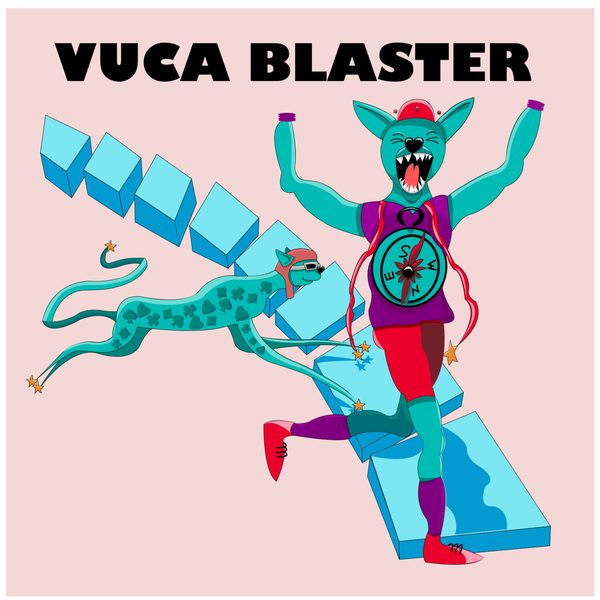

#66
Mut beginnt, wenn Gewissheit endet
Was, wenn ein Teil von uns mutig nach vorne will – und ein anderer gleichzeitig auf die Bremse tritt? Gunther Schmidt sprechen wir darüber, warum genau dieser innere Widerspruch kein Problem sein muss.
· 52 Min.
mit Gunther Schmidt
- mutig · Hauptwert
Diese Folge hören
Dort hilft jedes Abo und jede Bewertung dem Podcast.
Worum es geht
Was, wenn ein Teil von uns mutig nach vorne will – und ein anderer gleichzeitig auf die Bremse tritt?
Mit Dr. Gunther Schmidt sprechen wir darüber, warum genau dieser innere Widerspruch kein Problem sein muss. Angst, Zweifel und Widerstand sind aus seiner Sicht nicht einfach Hindernisse, die wir überwinden müssen. Sie können wichtige Hinweise darauf geben, was wir brauchen, um trotz Unsicherheit handlungsfähig zu bleiben.
In dieser Folge geht es unter anderem um:
warum Mut ohne Ungewissheit und Angst kaum denkbar ist
weshalb wir Angst nicht bekämpfen, sondern als Hinweis auf Bedürfnisse wie Sicherheit, Schutz und Verbundenheit verstehen können
warum Entscheidungsangst häufig weniger mit der Entscheidung selbst als mit der Angst zu tun hat, uns hinterher Vorwürfe zu machen
wie eine Art „innere Solidarität“ dabei helfen kann, Entscheidungen trotz ungewissem Ausgang zu treffen
weshalb Widerstand in Veränderungsprozessen keine Störung sein muss, sondern wertvolle Informationen liefern kann
warum Unternehmen das bisher Erreichte würdigen sollten, bevor sie Menschen für etwas Neues gewinnen wollen
und weshalb ein Ziel nicht unbedingt dazu da ist, exakt erreicht zu werden, sondern uns zunächst in Bewegung bringen kann
Ein Gespräch über Angst, Ambivalenz, Veränderung und den Mut, sich zu bewegen, obwohl wir nicht wissen können, wo wir am Ende ankommen.
Transkript lesen
Automatisch erstellt. Fremdwörter, Fachbegriffe und Namen können falsch erkannt sein.
0:04 Ja, hallo und herzlich willkommen zu einer neuen Folge des VUCA Blasters. Heute möchte ich mit einer Frage starten, die wir wahrscheinlich viele von uns kennen. Was ist eigentlich, wenn ein Teil von mir mutig nach vorne will und ein anderer Teil gleichzeitig auf die Bremse tritt? Welchen davon sollte ich zuhören? Unser heutiger Gast beschäftigt sich seit Jahrzehnten genau damit, wie unser Erleben entsteht, wie wir uns selbst beeinflussen können und warum das, was wir gerne als Problem loswerden würden, manchmal sogar eine ziemlich wichtige Funktionäre ist. für uns erfüllt. Dr. Gunther Schmidt ist Arzt für psychosomatische Medizin und Psychotherapie, Gründer und Leiter des Milton Ericsson Instituts Heidelberg, ärztlicher Direktor der SysTelios Klinik und vor allem der Begründer des Hypnosystemischen Ansatzes. Dabei geht es unter anderem um eine Idee, die ich für unseren Thema unglaublich spannend finde. Wir haben häufig viel mehr Kompetenzen und Möglichkeiten in uns, als uns in schwierigen Situationen gerade zugänglich sind. Also wollen wir heute darüber sprechen, warum wissen wir manchmal ganz genau, was wir tun sollten und tun es trotzdem nicht? Was passiert, wenn verschiedene Seiten in uns gleichzeitig etwas völlig Unterschiedliches wollen? Es zögern wirklich ein Problem. Und wie können wir uns selbst in einen Zustand bringen, in dem wir auch mutiger handeln können? Ja, herzlich willkommen in den Podcast, Herr Schmidt. Schön, dass Sie dabei sind. Fehlt Ihnen bei der Vorstellung noch etwas, was Ihnen wichtig ist, was die Zuhörenden über Sie wissen sollten? Gut. War ich so, alles ganz grob ist natürlich immer sehr kurz, so eine Vorstellungsrunde, aber...
1:43 Ich weiß noch, dass ich auch noch Volkswett bin, aber das ist sowieso nur im Bereich der Wirtschaft relevant, wenn ich daraus an Beratungen war. Dann haben wir drei Check-in-Fragen und dann beginnen wir mit dem Podcast. Die erste Check-in-Frage. Ein gutes Gespräch der letzten Zeit, das für mich bedeutsam war, Punkt, Punkt, Punkt. Aha, da soll ich jetzt irgendwie eine Erinnerung an ein solches Gespräch Ihnen schildern? Ich bin gerade im Moment mit Freunden auf La Gomera und das machen wir seit 30 Jahren fast und da haben wir jeden Morgen solche Gespräche. In dieser Woche zum Beispiel über die Frage, wie Identität, gerade männliche Identität in dieser Umbruchssituation, wo endlich mehr auch Gleichwertigkeit, Gleichberechtigung in den Vordergrund rückt zwischen Männern und Frauen, wie da auch männliche Identität wieder auf eine neue Art herausfordernd sich entwickeln kann, auch gerade bei jungen Männern. Sehr spannende Gespräche in diese Richtung, die natürlich dann auch zeigen, dass sich auch eine männliche Identität nur in der Begegnung und im Austausch mit weiblicher Identität und umgekehrt genauso so entwickeln kann in einer guten Weise. Aber im weiteren Sinne auch noch natürlich, wenn wir das gesamte Familiensystem der Menschen, die da eine Identität entwickeln, gucken, wie da die Interaktionen zwischen Männern und Frauen laufen.
3:15 Das waren bisher und sicher noch weitergehend sehr spannende Gespräche zwischen uns. Vielen Dank. Ich glaube, da könnte man wahrscheinlich eine eigene Episode zu machen, wenn es in der Zukunft war. Auch wieder ein Satz, den Sie vervollständigen sollen, was mir aktuell Hoffnung macht. Was mir aktuell Hoffnung macht, ist das Unbehagen vieler Menschen an der Art, wie zum Beispiel auch im gesellschaftlichen Diskurs, Menschen miteinander umgehen mit massiver Abwertung, mit massiver gegenseitiger Anfeindung und Polarisierung. Dass dies aber sehr viel Unbehagen bei Menschen auch offensichtlich auslöst, weil dieses Unbehagen für mich schon sozusagen der aufkeimende Wunsch ist, der hoffentlich noch immer stärker wird, dass man auf diese Art mit bleibender Unterschiedlichkeit zwischen Menschen sicher nicht umgehen sollte. und dass dann allwedig vielleicht daraus eine Kraft wird, dass man das wieder anders gestaltet. Und dann die letzte Check-In-Frage. Dann haben wir es geschafft. Welche Eigenschaft schätze ich an mir oder welche Eigenschaft schätzen Sie an sich? Oh wow. Ja, ich glaube eine Kombination zwischen einerseits, dass ich mir was zutraue und andererseits, dass ich ständig an mir zweifle. Weil indem ich ständig an mir zweifle, bin ich ständig immer wieder am Gucken, ob man nicht noch was anders sehen könnte, als bisher. Und das ist schon die Voraussetzung von Lernen. Und das möchte ich bis zum letzten Atemzug machen.
4:55 Und deswegen ist auch der Zweifel für mich eine ganz besondere, der Zweifel an mir selber, eine ganz besondere, wichtige Kompetenz in meinen Augen. Ja, dann vielen Dank. Dann kommen wir zur Check-In-Frage in den Podcasts. In diesem halben Jahr, was ist Mut für Sie? Na, das ist eine vielschichtige Fragestellung. Also Mut allein gibt es für mich überhaupt gar nicht. als eine Art von Erlebnisphänomen. Mein Mut ist eigentlich ja schon in der Art der Beschreibung, was von Mut redet in Begriffsbildung, etwas, was schon sozusagen eine dialektische Kontrastierung mit enthält. Also warum reden wir überhaupt von Mut, wenn es offensichtlich was anderes auch gibt? Zum Beispiel Angst oder auch Zweifel oder sowas in der Form. Und nun kann man jetzt... Also Mut hat in jedem Fall für mich damit zu tun, dass jemand irgendwie in einer Frage, wo es noch nicht klar ist, wie es ausgehen kann. Also im Umgang mit bleibender Ungewissheit. Da kann man dann machen, was man will, die Ungewissheit bleibt, sich trotzdem dann schließlich entschließt, in irgendeiner Weise in eine Richtung, eine Richtung zu wählen, in die die Person dann geht.
6:17 Das kann in Richtung sein, Handeln vorwärts zu gehen. Das könnte aber auch der Mut sein, mal zurückzuweichen. Also sehr kontextabhängig. Und es könnte auch bedeuten, die Bereitschaft sozusagen sich zu bewegen, in dem Sinne, dass man erstmal im Moment nichts macht, obwohl Gott und die Welt erwartet und man selber vielleicht auch von sich, dass man etwas macht. Also als Ergebnis eines Abwägungsprozesses, in dem verschiedene, zum Teil auch widersprüchliche, Hochrechnungen über Erwartungen einbezogen werden. Weil im Grunde genommen ist Mut aus meiner Sicht überhaupt nur denkbar als Ergebnis eines Hochrechnungsprozesses über zu erwartende Entwicklungen in der Zukunft, die man halt unterschiedlich einschätzen kann. Dazu gehört aber auch noch ein anderer Mut, es gibt ja auch den Begriff des Vagemuts, es gibt aber auch den Begriff der Demut. Und Demut kommt, wie mir gerade noch ein Freund vor kurzem erzählt hat, Bernd Schmidt, der ist ja Schätze, kommt eigentlich von Dienmut, also auch der Mut zu dienen. Das heißt, sich selber mit seiner eigenen Begrenztheit anzuerkennen und über etwas selbst über einem Hinausgehendes, Ich-Transzendierendes, etwas auch für ein größeres Ganzes zu machen. Es kann für andere Menschen sein, für die, was weiß ich für welche Sachen, aber dass es eben nicht nur um die persönliche Interessenlage geht, sondern auch darum, für einen größeren Zusammenhang sich engagieren zu können.
7:53 auch mit der Gefahr des Scheiterns verbunden. Mut und die Möglichkeit eines Scheiterns ist auch nicht voneinander zu trennen für mich, aber dann eben mit der Idee, auch wenn die Möglichkeit des Scheiterns nicht auszuschließen ist, wage ich trotzdem oder mache ich trotzdem was und entscheide mich für eine Handlung, ohne zu wissen, wie das Ergebnis ist. Ich habe mir erhofft das Ergebnis, aber ich weiß es nicht. Ich habe tatsächlich mich ja auch gut vorbereitet auf diesen Podcast und einiges von Ihnen auch gehört im Vorfeld, und passend gerade zu dem, was Sie gesagt haben, gibt es auch diesen Zitat von Ihnen, Wer Angst hat, hat Zukunft. Einfach das nach vorne Gerichtete und das passt so wunderbar, finde ich, auch zu dem Thema Mut an der Stelle, weil Mut ja oft auch mit Angst immer gleichgesetzt wird als quasi das Gegenteil, was es nicht unbedingt ist an der Stelle, aber ich finde das schön tatsächlich im Hinblick auf dieses nach vorne gerichtete Denken, auch gerade oft das, was Sie gerade gesagt haben in Bezug auf Mut, dass das Ganze immer so ein bisschen in die Zukunft quasi gerichtet ist. Meine Frage wäre tatsächlich an der Stelle, was wäre denn ein guter Rat, das quasi so ein bisschen zu institutionalisieren für jemanden, um zu sagen, okay, gerade in Bezug auf Mut kann ich mir nicht immer nur etwas in Bezug auf Angst vorstellen in der Zukunft, sondern wie kriege ich das hin, das auch immer in etwas Positives zu wandeln oder öfter in etwas Positives zu wandeln? Also das ist interessant, oft ja so, wenn man mit Leuten darüber redet, zum Beispiel über das Thema Mut oder sowas und dann kommt natürlich automatisch immer auch die dialektische Kehrseite, wie ist das denn mit Angst oder so und viele Leute sagen, ich habe keine Angst oder sowas und so weiter. Das halte ich für ein rührendes Missverständnis, weil es geht eigentlich, sonst macht der Begriff Mut auch überhaupt keinen Sinn für mich, eigentlich immer darum, um diese Restriktion, der wir ausgesetzt sind – Restriktion nenne ich etwas, was wir nicht verändern können, obwohl wir es vielleicht verändern wollen – und die Restriktion, die ich meine, ist, dass es eben bleibende Ungewissheit ist. Jede Entscheidung, die ich jetzt treffe – und wir treffen jeden Tag x Entscheidungen, auch wenn wir sie nicht unbedingt als Entscheidung definieren – ist eigentlich immer etwas, was eine Art Auswahl ist. Ich setze irgendwie, ich wähle eine, ich priorisiere irgendwas und mache was. Natürlich mit der Erwartung bezogen auf Zukunft. Aber diese Zukunft, die hätte ich natürlich gern sicher, aber es geht halt nicht. Also ist schon vornherein klar, es bleibt ungewiss. Wenn aber etwas ungewiss bleibt, dann ist es typischerweise im menschlichen Gehirn so, ob es einem passt oder nicht. Und es hat nichts mit rationalem Willen zu tun, überhaupt nicht. Das auf der unwillkürlichen Ebene. Damit beschäftigt sich natürlich mein hypnosystemischer Ansatz ganz besonders.
10:49 systematisch. Auf der unwillkürlichen Ebene, wie die ganze Hirnforschung auch zeigt, automatisch Amygdala-Aktivitäten und ähnliche Aktivitäten. Amygdala ist ja nur ein zentraler Aspekt von dem ganzen Netzwerk, was dann läuft. Diese bleibende Ungewissheit auch mit sogenannter Angst oder mit zumindest Zögerlichkeit, Zurückhaltungstendenzen und so weiter beantwortet. Das heißt, Mut ohne Angst ist aus meiner Sicht so gut wie gar nicht möglich. Die Frage ist nur, wem folge ich? Aber diese Angst ist natürlich nicht blöde, überhaupt nicht, sondern die drückt andere Bedürfnisse aus. Wie das vorhin auch schon in der Anmoderation von Herrn Wyszynski so angeboten ist. Ich habe mehrere verschiedene Strebungen in mir, aber keine von denen ist blöd. Wenn dann die Frage zum Beispiel wäre, auf welche höre ich mehr, ist das gar nicht eigentlich für mich eine so sinnvolle Fragestellung, sondern ich sollte auf alle hören. Und dann kann ich immer noch entscheiden, brauche ich dafür dann aber eine Art Meta-Position in mir, aus der heraus ich dann Prioritäten setze. Aber in jedem Fall ohne sogenannte Angst. Das sollte man dann noch übersetzen, weil Angst ist eigentlich nur ein Bedürfnis, eine wertvolle Informationsquelle über Bedürfnisse. Da geht es eigentlich gar nicht um Angst bei sogenannter Angst, sondern das Bedürfnis nach Schutz, Sicherheit, Handlungsfähigkeit und Verbundenheit in aller Regel. Und jetzt ist es aber gleichzeitig ja so, dass ich ja, wenn ich entscheiden will, in Ungewissheit bleibe. Das heißt, es ist gar nicht sicher, ob ich nachher handlungsfähig bin oder was weiß ich. Also ist es natürlich klar, dass es immer amivalent bleibt. Und das macht überhaupt gar nichts. Wenn ich dann aber sage, okay, ich habe Angst und ich würdige diese Angst. Nicht, ich habe keine Angst, sondern, ja klar, habe ich Angst. Und dann überlege ich, was mache ich damit? Weiche ich zurück, bleibe ich stehen, gehe ich vorwärts. Mit Würdigung meiner anderen sozusagen zittrigen Seite, dann wäre es erst so richtig kraftvoll. Nicht, wenn ich die überspringe, weil dann brauche ich Energie, um das zu unterdrücken oder wegzuschieben. Und die habe ich dann gar nicht für die Gestaltung in dieser bleibenden Ungewissheit.
13:01 Muss man dafür aus dieser Angst, weil die kann ja auch lähmen und vielleicht ist einem auch ja gar nicht klar, was bedeutet diese Angst, welches Bedürfnis steckt dahinter. Da muss man ja wahrscheinlich erst mal, was Sie eben sagten, vielleicht in dieser über ich oder was auch immer, wie das heißt, in so eine andere Position, vielleicht aus dieser Emotion rausgehen. Oder hat dich das ein bisschen falsch verstanden? Weil man muss erst mal klar werden, okay, welche Bedürfnisse sind denn da, damit man diese Angst erst erkennt und was kann ich dagegen machen? Die Angst ist typischerweise ein Ausdruck von einem menschlichen, überhaupt von jedem Lebewesen, denke ich, nicht nur von Menschen, von einem Grundbedürfnis von Lebewesen. Und das ist einfach Sicherheit. Das Überleben zu sichern, Sicherheit überhaupt. Nur die Frage ist dann, was ist das Maß, das Kriterium, für wann erlebe ich mich sicher? Und typischerweise führt Angst zur Lähmung dann, das habe ich tausendmal in Therapien oder Coachings erlebt. Für meine Arbeit mache ich ja im Bereich Coaching, Team und Organisationsentwicklung, da ist keiner anders. Wenn jemand sein Sicherheitsbestreben, das ist unabdingbar, das kann man nicht ausschließen, aber den Maßstab für Sicherheit daran abliest, dass dann auch sicher ist, dass das rauskommt, was man eigentlich will. Und das genau liegt ja in der Zukunft und damit ist man in der Falle. Das kann ich nicht wissen, weil schon John Lennon manchmal gesagt hat, so ungefähr, life is what happens while we make other plans. Also jetzt bleibt es ungewiss. Wenn ich jetzt aber das Gefühl habe, oh verdammt, ich kann erst dann handeln und meine Angst sozusagen in Handlungsfähigkeit übersetzen, wenn ich sicher bin, dass auch das Gewünschte rauskommt, da bin ich schon verloren. Und dann wird, da ich das ja nicht erkennen kann, also ich, das heißt, intuitiv genau merke, das kann ich nicht sicherstellen, das Kriterium, dann führt es eher tendenziell dazu, ah, dann vermeide ich lieber und lähme mich so oder werde gelähmt oder sonst was in der Art. Das heißt, Mut setzt eigentlich voraus, die Annahme, es bleibt ungewiss und ich mache es trotzdem. Aber dafür darf ich dann noch ein bisschen Angst haben, beiden tun, weil es ja ungewiss bleibt und die Sicherheit, die ich dann ersehne und dieses Bedürfnis hört nie auf, die muss ich mir dann anders holen. Das kann dann allerdings nur noch eine relative Sicherheit sein, weil die absolute Sicherheit wäre ja, ich bin jetzt schon sicher, dass das gewünschte Ergebnis rauskommt und das genau kann ich halt nicht gewährleisten. Also bleibt es nur bei einer relativen Sicherheit und die kommt eher von innen. Natürlich kann ich dann soziale Netzwerke, alles Mögliche abchecken, ob die noch auch mich tragen. Man kann 15 Hochrechnungen machen mit oder ohne Excel-Tabellen und so weiter und so. Aber das reicht nicht aus. Sie haben ja den Gerald Gigerenzer auch mal so, oder den Gerd Gigerenzer weiß ich, habe ich gesehen gerade vorhin, wo ich mal ihre Webseite auch gemacht habe. Der hat mal schön im Vortrag erzählt, wie ein Bekannter von ihm, der heiraten wollte, dann ein Volkswirtschaftsprofessor, dann mit Excel-Tabellen Bilanzen, gemacht hat von zwei Frauen, mit denen er da die Möglichkeit hatte, welche letztlich in der Bilanz dann besser abschneiden. Die hat er geheiratet, hat aber trotzdem nicht geklagt.
16:25 Und kann man diese, braucht man so eine Art Ungewissheitstoleranz, kann man das lernen oder kommt man da hin und wie lernt man das? Ist das individuell unterschiedlich oder gibt es da vielleicht irgendwie so Ratschläge von Ihnen? Nein, ich denke, das kann man sehr gut lernen. Ich versuche das. Ich habe extra dafür Konzepte entwickelt für diese Entscheidungshilfe, weil ich immer wieder das, also wenn ich dann, also wenn zu mir Leute kommen, sei es im Coaching oder in Therapien, die meisten haben Entscheidungsprobleme in welcher Art. Und darum geht es dann letztlich immer. Und wenn ich dann aber mit denen rekonstruiere, was zum Entscheidungsproblem erleben, also nicht nur Entscheidung als Aufgabe, Entscheidung zu einem Problem gemacht hat, dann sind es typischerweise bestimmte Grundstrukturen, die man dann, da gibt es natürlich immer Variationen, das ist ja klar, aber so Tendenzen, die sind ganz stark immer wieder zu finden. Zum einen die Wunschvorstellung, dass dann eben das Gewünschte auch rauskommt von dem, was man da will. Und das ist eben nicht zu leisten. Aber das wiederum hat zu tun damit, wie man dann bewertet, wenn nicht das Gewünschte rauskommt. Also das ist ein bisschen ein komplexer Ablauf so. Und dann habe ich am Anfang immer gedacht, naja, ist ja verständlich, die Leute wollen halt nicht, wenn ich die Frage, wann könnten sie denn entscheiden?
17:49 Dann sagten die meisten, ja, wenn ich wüsste, was dann bei der Entscheidung rauskommt. Total verständlich. Ja, und wie hoch ist die Wahrscheinlichkeit? Ja, kann ich ja nicht wissen. Was ist die Schlussfolgerung? Ja, dann mache ich es lieber nicht. Na gut, kann man machen. Aber was wäre denn das Schlimmste, was da passieren würde, wenn es nicht das Gewünschte wäre? Dann dachte ich am Anfang, natürlich ist ja verständlich, dass man einfach kein ungewünschtes Ergebnis haben will. Und das ist sicherlich auch so. Aber das mache ich ja auch oft in Vorträgen, in Kongressen oder in Seminaren, wenn ich Weiterbildungen mache, dass ich die Leute frage, hat schon jemand von Ihnen mal mit sich gehadert? Und praktisch alle Leute oder die meisten haben schon oft mit sich gehadert, bezogen auf Entscheidungen. Und das ist genau die Falle, die dann dazu führt, dass dann Leute eben zögerlich werden oder nicht entscheiden, sich dafür dann aber meistens wieder Vorwürfe machen, weil sie sich genau kennen, dass wenn bei einer Entscheidung nicht das Gewünschte rauskommt, dass sie sich hinterher Vorwürfe machen, dass sie angeblich falsch entschieden hätten. Und das ist eigentlich eine Falle von vornherein deshalb, weil die Person, die dann hadert oder die sich Vorwürfe macht, aber das machen halt die allermeisten Leute, die hat ja dann mehr Informationen als die Person, die sie waren, als sie entschieden haben.
19:09 Also kann man eigentlich sagen, die Person, die dann hadert und Vorwürfe macht, die hat eigentlich mehr Informationen, die sie eigentlich der Person zu verdanken hat, der sie nahe bei Vorwürfe macht, im inneren Selbstgespräch, so in der Form. Ich sage das als etwas spaßiger Vergleich, das ist so ungefähr so, wie wenn sie in der Straße wohne, wo sie, was weiß ich, immer 50 fahren durften mit dem Auto und jetzt hat die Stadtverwaltung, sie sind jahrelang 50 gefahren, und jetzt hat die Stadtverwaltung vor 14 Tagen auf 30 umgestellt und schickt ihnen jetzt einen Strafzettel, weil sie vor einem Jahr oder vor zwei Jahren 50 gefahren sind, dann würden sie hoffentlich nicht bezahlen. Aber das ist das gleiche Prinzip, wenn man mit sich hadert. Aber diese in gewisser Weise die unbewusste Angst vor sich selber, bei gleichzeitig einem großen Sehnsuchtsbedürfnis nach Sicherheit. Und die einzige Sicherheit, die man hat, ist, dass man weiß, wenn es nicht klappt, mache ich mich nachher selbst fertig. Die führen nicht dazu, dass man dann über die Schwelle ins Ungewisse geht, sondern mehr, ha, ha, ha. Das heißt, man braucht als erste innere relative Sicherheit, aber das kann man lernen. Dass man sich selber sozusagen im Moment der Gegenwart, wenn man eine Entscheidung trifft, schon verspricht, dass die Person, die man in der Zukunft sein wird, wenn man erkennen würde, dass nicht das Gewünschte rauskommt, dass die dann nicht die heutige Person fertig macht, sondern sie tröstet und ihr vor allen Dingen dankt für den Mut, über die Schwelle in die Ungewissheit gegangen zu sein und dafür, dass sie dann die Person in Zukunft überhaupt diese Informationen hat, die bei der Entscheidung die Person ja gar nicht haben kann usw.
20:48 und damit so eine innere Solidarität, eine innere Loyalität entsteht, dann ist die äußere absolute Sicherheit überhaupt nicht gegeben. Das ist ja klar, die kann man nicht erreichen. Aber die innere Sicherheit, die wird ganz anders. Und die hilft dann, über die Schwelle der Ungewissheit zu gehen. Das ist ein entscheidender Punkt. Es gibt noch mehrere Aspekte, aber da kommen wir vielleicht noch drauf. Passend dazu gibt es ja auch etwas, was sehr, sehr positiv ist. genau in Richtung dieses Denkens, auch wieder ein Zitat von Ihnen. Hoffnung ist nicht die Überzeugung, dass etwas gut ausgeht, sondern die Gewissheit, dass etwas Sinn hat, egal wie es ausgeht. Genau. Und das finde ich sehr, sehr schön auch erklärt, gerade an dem Beispiel, was Sie gerade gesagt hatten. Ich kann den Ausgang ja nicht immer bestimmen, aber ich gehe ja mit dieser Hoffnung da rein, dass das, was ich da tue, in dieser Prozess auf dem Weg dahinten ist. Genau. Ja, wobei natürlich, das sollte man dazu sagen, fairerweise, dieses Zitat, das ich fantastisch finde, stammt leider nicht von mir. Ich finde es aber klasse. Václav Havel, der frühere tschechische Präsident, hat es gesagt. Und er hatte natürlich auch genug Grund dafür. Der ist für seine Überzeugung ins Gefängnis gegangen, in der Kata 77, in der kommunistischen Diktatur. Aber das sind genau diese Sachen, die da helfen.
22:06 Und die helfen mir bei meinen Entscheidungen bis heute immer. Weil wir eben nicht die Zukunft wissen können, brauchen wir andere sicherheitgebende, haltgebende Orientierungskriterien. Und da ist zum Beispiel Sinn, da hat mich natürlich auch Viktor Frankl mit seiner Arbeit sehr beeinflusst, der Begründer der Logotherapie. Ich hatte mal das Glück, den ganzen Tag mit ihm diskutieren zu können, zum Ereignis und so weiter. Der hatte mich sehr stark beeinflusst, weil der hat ganz klar immer betont, und das kann ich nur unterstützen und auch bestätigen, im eigenen Leben drei wichtigen Entscheidungen. Wenn ich mich orientiere daran, was macht mir Sinn? Aber Sinn heißt ja nicht Wahrheit, sondern das ist eigentlich eine Art Feedback-Schleife im Erleben zwischen bewusstwillentlichem und intuitiven Rückmeldungen im Sinne von Stimmigkeitsgefühl. Mit Wahrheit hat es nichts zu tun, sondern nur mit ... Aber niemand kann die objektive Wahrheit erkennen, wie wir aus der Hirnforschung ja wissen. Stichwort sogenannte Autopoyese. Wir können nur immer aufgrund unserer inneren, neurologischen, psychosozialen Erfahrungswelt, diese Hirnforschung nennt es dann Strukturdeterminiertheit, da können wir halt Perspektiven entwickeln, aber das ist niemals ein Abbild der Wahrheit.
23:23 Niemand auf dieser Welt kann die objektive Wahrheit erkennen. Also bleibt es eigentlich letztendlich beim Sinnorientierungsaspekt. Und mehr hat man halt nicht, aber das hat man. Das wiederum wird dann wieder kraftvoller, wenn man sich seine eigene Endlichkeit immer bewusst macht und die aber nicht als Schwäche ansieht, sondern als eine überhaupt erst Würde ermöglichende Stärke. Jedes lebende System gewinnt überhaupt nur seine Identität durch Innen-Außen-Unterschneidung, durch Grenzbildung, also durch Begrenzung. Wenn man keine Begrenzung hat, dann diffundiert unsere Energie in die Entropie des Weltalls. Unsere Haut weiß es genau, unser Immunsystem auch. In unserer Gesellschaft ist das nicht so populär. Da muss immer Wachstum, Wachstum, Wachstum sein. Wird da sogar von Nullwachstum geredet, ein völlig lächerlicher Begriff. Entweder ist es Null, dann ist es kein Wachstum. Oder es ist Wachstum, dann ist es nicht Null. Jede Krebszelle, sage ich manchmal im Spaß, würde sich sehr verstanden fühlen von der Ideologie unserer Gesellschaft. Wo es immer Wachstum, Wachstum, Wachstum ist. Das ist genau, was Krebszellen machen. Aber mit keinem günstigen Ergebnis. Weißt du, wenn so in Unternehmen jetzt zuhören, also viele Mitarbeiter hören diesen Podcast, was könnten die so mitnehmen, wenn die irgendwie entweder so eine Gehaltserhöhung oder irgendwas, wo sie sich aktuell noch nicht trauen oder irgendwelche Ideen einbringen, ist es dann dieser Gedanke, okay, du kannst eh nicht wissen, wie es ausgeht am Ende, dass das denen schon hilft oder den Sinn dahinter zu sehen oder dass das mal so ein bisschen reifbarer wird.
25:08 Also das ist natürlich ein Veränderungsprozess auch in Unternehmen. Ich habe gerade eine Kollegin, die bei mir Ausbildung gemacht hat, Vera Starke in Berlin, da habe ich gerade für eine Veröffentlichung ein Vorwort geschrieben. Die haben jetzt gerade eine interessante Untersuchung gemacht mit insgesamt 1200, glaube ich, oder 1150 Teilnehmern in Befragungen und Organisationen zum Thema Change. Und da zeigte sich zum Beispiel, dass von den Führungsebenen die meisten Leute davon ausgehen, dass die Mitarbeiter, die Teams, nicht veränderungswillig seien. Wobei das aber bei fast 78 Prozent der Mitarbeiter selber ganz anders war, dass die sich als sehr veränderungsbereitwillig sogar selber verstanden haben, aber zu Recht davon ausginge, dass sie gar nicht so gesehen werden, sondern eher so gesehen werden, naja, die wollen ja sowieso nicht so in der Form. Und dann hat es aber interessante Auswirkungen dafür, für die Bereitschaft an der Veränderungsgruppe, tatsächlich mitzuwirken, wenn die Leute schon von vornherein davon ausgehen, ich werde ja eher sozusagen mit der Misstrauensvorannahme gesehen, ich will ja vielleicht gar nicht, dann hat es eben gerade mindernde Auswirkungen auf die Bereitschaft, obwohl die vorher da war, und so weiter. Und der Veränderungsprozess wird ungünstiger und oft erfolglos.
26:28 Zwar behaupten manche Leute, dass 70 Prozent der Veränderungsprozesse gar nicht klappen, das scheint zu hoch zu sein, aber doch ein gewaltiger Teil von Veränderungsprozessen läuft nicht konstruktiv und zielorientiert so gut. Da habe ich zum Beispiel, wenn ich so einen OE-Auftrag so habe oder so was, oder auch in Teamentwicklung oder so was, meistens mit den Auftraggebern eher Schwierigkeiten am Anfang in der Auftragsgestaltung. Es ändert sich dann manchmal schon, aber am Anfang schon, weil ich dann immer vorschlagen von mir aus, wenn wir Veränderungsprozesse anstreben, dass wir dann unbedingt auch kommunikative Räume schaffen sollten, in denen die Leute über ihre Ängste, Ambivalenzen, Widerstände, Fragestellungen, ist das überhaupt sinnvoll oder nicht und so weiter, miteinander sich austauschen dürfen. Nicht, um dann zu sagen, wir machen nicht mit, aber um daraus dann zu destillieren sozusagen, zu übersetzen, welche Bedürfnisse noch zu berücksichtigen sind bei den Beteiligten, sodass sie engagiert am Veränderungsprozess über teilnehmen können. Und dazu gehört eben genau dieses Achtungsvolle, betont es extra mal, beachten von Ängsten, Widerständen und alles Mögliche, weil eine Veränderung, die hat typischerweise ganz viele Auswirkungen, die man auf der ersten Ebene gar nicht so beachtet, wenn man nur in wirtschaftlichen Kategorien denkt.
27:50 Zum Beispiel gewachsene Beziehungen in bestimmten Teams, bestimmte Strukturen, Positionen und so weiter, alles Mögliche kommt da in Bewegung. Vieles, was vor Orientierung gegeben hat, ist plötzlich dann wie weggebrochen und muss neu gestaltet werden und das macht einfach, ob man will oder nicht, auch unbehaben bis zur Angst. Das ist aber kein Problem. Das ist nur, wenn man es übersetzt, eine wertvolle Information darüber, was man im Austausch noch einmal auch miteinander austauschen sollte. Teil einer Angstdynamik immer, das habe ich in meinen Konzepten zu Angst ausführlich beschreiben können, ist auch immer, dass Leute in ihrer Angst sich meistens alleine fühlen. Also keine Verbundenheit da ist. Also wenn Verbundenheitsräume geschaffen werden können, wo man sich austauscht, dass man nicht allein ist mit diesen Unbehagen oder Angstsachen, um dann daraus mit Würde und Achtung gemeinsam zu überlegen, ja Mensch, wenn wir die Veränderung wollen, was könnte man denn jetzt da ausschließen, was wir noch mit beachten sollen? Was wir vielleicht eher etwas langsamer machen oder kleinschrittiger oder was immer. Das kann tausend unterschiedliche Sachen sein. Aber dass diese Ambivalenzen, womöglich auch Widerstände gegen die Veränderung, ernst genommen werden und achtungsvoll als Kompetenz für andere Bedürfnisse angesehen werden, dann wird der Prozess typischerweise deutlich konstruktiver.
29:12 Wenn ich aber in Auftragsverhandlungen bin, ist es meistens so, dass das erste, was kommt, sind Sie verrückt, das machen wir auf gar keinen Fall? Ja, was bringen Sie dazu? Na hören Sie mal, da wecken Sie ja nur schlafende Hunde. Eine sehr beliebte Metapher. Ich sage dann meistens, das ist spannend, vielen Dank für die Information. Bisher habe ich gedacht, das sind Menschen, keine Hunde, aber glauben Sie ja nicht, dass die schlafen. Im Gegenteil, so in der Form. Und wenn das eingebunden wird, dann kann das zu einer gemeinsamen, kohäsiven Kraft werden, die auch wieder die Bindung an die Organisation stärkt, weil die Leute sich gesehen fühlen. Zum Beispiel haben wir das in der Systelius-Klinik auch so, praktizieren wir das ständig, solche Dinge. Da habe ich von vornherein die ganze Organisationskultur so konzipiert gehabt. Wir haben die vor 20 Jahren gegründet und da arbeiten wir ja hauptsächlich dann eben im Bereich der sogenannten Psychotherapie, Psychosomatik mit Leuten. Und das hypnosystemische Konzept geht ganz klar davon aus, dass wir die Leute als gleichrangig wertvolle, kompetente Kooperationspartner, unsere sogenannte Klienten, so mit denen umgehen, weil wir davon ausgehen, die Kompetenzen für hilfreiche Lösungen, die sind sozusagen in ihrem schlummernden Potenzial schon da, selbst wenn sie, was weiß ich, nicht mehr daran glauben.
30:30 Da bin ich der Auffassung, das kann man von Menschen in den Teams überhaupt nur erwarten, wenn man auch so mit ihnen umgeht. Also haben wir die ganze Organisationskultur lange bevor und von Agilität schon geredet wurde, haben wir das immer schon so gemacht. Gut, als zum Beispiel eine Corona-Krise war, da gab es ja dann so ein Gesetz, dass man nur noch Leute beschäftigen durfte in der Klinik, die sich geimpfen ließen. Bei uns ungefähr 10, 15 Prozent der Belegschaft, wollte sich nicht impfen lassen. Das hätte dann für die Klinik bedeutet, wir hätten 15 Prozent der Leute einfach nicht mehr beschäftigen können. Da haben wir mit jedem einzelnen, natürlich, ich habe mich impfen lassen, ich war ganz klar für Impfungen, meine Mitgeschäftsführung, den Reinhardt auch, aber wir haben dann die Leute, jeden einzelnen, jede einzelne Person, sehr aufwändiger zeitlich, aufwändiger Bereich war das auch, aber das hat sich gelohnt, haben wir uns mit denen zuhin gesetzt und sie achtungsvoll einbezogen, sagten, hey, ich bin vollkommen anderer Meinung als du, aber du hast doch sicher anerkennenswertig gute Gründe, dich nicht impfen zu lassen. Lass uns doch mal drüber reden. Typischerweise waren die Leute am Anfang schon richtig in der Defensive, weil sie erwartet haben, wie von anderen auch, dass sie massiv entwertet werden und das war gerade nicht der Fall. Und wir haben das alles sehr achtungsvoll miteinander ausgehandelt und dann praktisch für jeden einzelnen Beteiligten Lösungen entwickelt.
31:50 Zum Beispiel manche Leute haben vorgearbeitet, damit sie in der Zeit, wo das dann das Gesetz wirksam war, oder andere online oder andere haben dann in andere Häuser mit ihren Aufgaben verlegt, wo sie gar nicht direkt mit den Klinikbereichen suchen. Und insofern war das möglich, vielfach, dass wir da konstruktiv, das hat nachher die Kohäsion im Team im gesamten Klinik aus derartig noch gestärkt, dass wir viel bessere, effektivere Zusammenarbeit hatten als vorher. Einfach, weil die Widerstände und die ganzen Ablehnungskonzepte immer eins genommen wurden und wir dann auch überlegt haben, naja, die sind doch auch nicht blöd, wenn die Leute so denken. Ich denke völlig anders, aber ich habe ja auch nicht die Wahrheit. Also gucken wir mal, wie man so eine kooperative Koexistenz, wir müssen ja irgendwelche Prioritäten setzen, aber so eine Koexistenz hinkriegen bei leidenden Unterschieden. Wir waren weiterhin unterschiedlicher Meinung, aber konnten trotzdem kooperativ was machen. Und das ist genau das, was für Veränderungsprozesse gebraucht wird, weil dann die Leute merken, hey, hier werde ich gesehen, hier werde ich gewürdigt, auch wenn ich anderer Meinung bin. Und das heißt dann überhaupt nicht, dass die andere Meinung sich durchsetzen muss von den Leuten. Der entscheidende Punkt ist nicht, dass es inhaltlich durchsetzt. Das ist eine Komponente.
33:08 Aber vielfach wichtiger ist oft, dass es einfach mal anerkannt wird als eine zu würdigende Haltung und dass man dann in diesem Respekt miteinander kooperiert. Und das ist bei jedem Veränderungsprozess so der Fall. Und das mindert Ängste und mindert die Widerstände, weil sie ja damit eigentlich Botschafter von Bedürfnissen sind und die werden auf diese Art wenigstens berücksichtigt. Warum glauben Sie, dass Unternehmen sich da so schwer tun, wenn das irgendwie vielleicht auch wissenschaftlich belegt ist, oder auch langfristig die Leute an dieses Unternehmen binden, was Sie auch schon gesagt haben. Und vielleicht auch noch, oder vielleicht schließlich die zweite Frage erst danach, aber auch so ein bisschen, Sie hatten auch gesagt, dass das in diesen ersten Gesprächen immer aufkommt. Und wie schaffen Sie das, die Leute oder die Unternehmen dann zu überzeugen? Also es sind jetzt mehrere Fragen. Die erste erscheint, die Leute, wenn sie so reagieren in den Führungsetagen, sind natürlich auch nicht blöd. Ich verstehe das schon. Das hat was mit unserer ganzen Gesellschaft, mit der ganzen Entwicklung zu tun, wie uns psychosozial auch Weltmodelle vermittelt werden und so. Und da geht es typischerweise darum, dass eben Ambivalenzen zum Beispiel eher als ein Problem angesehen werden. Also auf der kognitiven Großhirnrendenebene, kann ich es auch von dieser Ebene unterscheiden, im windlich bewussten Prozess, da herrscht halt sozusagen die aristotelische Logik vor, entweder oder ein Drittes gibt es nicht.
34:35 Entweder machst du es oder du machst es nicht. Entweder ist du mutig oder du bist ängstlich und so weiter. Aber im unwillkürlichen Erlebnisbereich von Menschen generell läuft es anders. Da gibt es ständig nur mehrschichtige, zum Teil auch widersprüchliche Prozesse. Und genau das macht uns überhaupt zu flexiblen Menschen. Wenn man überlegt, wie die menschliche Rasse den gesamten Globus besiedelt hat, von Wüsten bis zu Antarktis und so weiter. Diese ganze Flexibilität kontextorientiert bei Menschen, die findet man bei keiner anderen Rasse sonst in dieser Form, die wäre überhaupt nicht ohne diese Multivalenzkompetenz möglich. Aber in unserer Ideologie sozusagen, in unserer Gesellschaft vorherrschendlichen Ideologie, da geht es eher entweder oder so in der Form. Und dann, gerade die Leute sind ja ständig unter Entscheidungsdruck. In der Globalisierung sowieso mit wahnsinniger Konkurrenz und so weiter. Ich verstehe das gut. Da muss man schnell entscheiden, tschak, tschak, tschak. Und wenn man da viel mit Ambivalenzen rummacht, das dauert länger und ist oft dann für die Leute mit dem Eindruck versehen, oh verdammt, das können wir uns gar nicht leisten, wir müssen jetzt wo. Und dann kommt aber so eine Art, wie man es jetzt psychotherapeutisch sagen würde, kontraphobische Umgangsweise mit den Ambivalenzen. Man versucht sie auszugrenzen, abzuwerden und zu übergehen und wegzudrücken.
35:57 Aber das geht heißt nur, dass die dann in die unterschwertige Guerrier-Dynamik gehen. Die sind ja nicht weg, sie können im Gehirn gar nichts löschen. Also wirkt sich das dann anders aus? Entweder, wenn man überlegt, es gibt ja Gallup-Umfragen, dass angeblich, wenn das stimmt ist ja der Horror, 70 Prozent oder mehr der Leute mit Dienst nach Vorschrift oder innerer Kündigung unterwegs sind. Wenn man sich mal vorstellt, was da für eine Produktivität entstehen könnte, wenn die Leute anders, das ist ja unglaublich. Und das hat aber damit zu tun, dass diese Ambivalenzen weggedrückt werden, aber dann unterschwellig, hören wir mal auf, in Zynismus oder in alles Mögliche dieser Art gehen. Und genau das ist nicht hilfreich. Ich verstehe es aber trotzdem, wie gesagt. Aber dann, wenn es, zweite Frage jetzt, dann wird es natürlich erst mal von mir gewürdigt, dass so, und dass damit natürlich dann der Wunsch da ist, dass die Veränderung besser läuft, wenn man einfach so gar nichts macht, und dann aber den Leuten mal an ihren eigenen Erfahrungen meistens kann man sagen, was sind denn ihre Erfahrungen, wenn sie das so gemacht haben bisher? War dann die jeweilige Veränderung? Die meisten Leute in den Führungsebenen haben viele Erfahrungen mit verschiedenen Veränderungen zwar ständig machen, waren da die Entscheidungen eigentlich immer sehr tragfähig, dann haben sie die gewünschte Veränderung mit richtiger Kraft gebracht, da steht sie ja daraus meistens nicht. Dann sagen sie, dann ist das, was man jetzt so, wenn ich ihnen folgen würde, da habe ich jetzt ein Dilemma, ich gehe da auf die Mitte, dann würde ich einen Lösungsversuch jetzt wiederholen, den sie ja sowieso schon x-mal gemacht haben, aber mit sehr ungünstigen Ergebnissen.
37:29 Also das haben sie nicht verdient, dass ich ihre Erwartungen erfülle. So, ich wäre ja praktisch, ich würde ihnen schaden, wenn ich ihre Erwartungen erfülle würde, ich habe da ein Dilemma. Ich kann es trotzdem machen, aber ich sage ihnen gleich, jetzt schon würde ich ihnen voraussagen, wenn wir es auf die Art machen, dann wird der Prozess nicht so effektiv, wie er werden könnte. Und dann biete ich ihnen halt anderes an. Und da gehört ganz stark dazu. In der Organisation ist es ja immer so, wenn wir jetzt sagen, ich wollte bei mir was ändern oder sie bei sich was, da sind sie der eigene Auftraggeber der Änderung oder ich. Also ich würde jetzt das ändern, okay, dann habe ich immer noch praktisch in mir, in meiner inneren, ich bin ja auch ein ganzer Verein und nicht nur eine Seite, eine Seite von mir will was verändern, der Rest wurde noch nicht gefragt. Also hätte man ja nach innen auch noch mal Kommunikation. Wenn man jetzt aber in einer Organisation ist, da ist es ja so typischerweise, dass bestimmte Leute in Entscheidungsfunktionen beispielsweise die Entscheidung für Veränderung treffen, aber andere brauchen, die diese Veränderung dann umsetzen. Und damit, da das für die oben in der Entscheidungsebene natürlich Sinn macht, sonst würden sie es ja nicht machen, ist es überhaupt nicht garantiert, dass es für den Leuten, die es umsetzen müssen, auch Sinn macht.
38:47 Ganz im Gegenteil, es könnte gerade, und das ist ja ganz oft der Fall, dass zumindest ein Teil der Belegschaft immer, was, das soll sinnvoll sein, eher so in der Art. Das heißt, ich sage das so ein bisschen metaphorisch, die Leute, die Entscheidungsfindung machen, das sind die Sinnstifter, die Sinnstifter, die dann aber auch in der Bringschuld für Sinnvermittlung sind. Nicht einfach, übrigens, wir machen jetzt eine Entscheidung, eine Veränderung, und dann setzt ihr es um, weil das macht die nicht mit, sondern wir müssen euch präsentieren und plausibel machen, wofür es sinnvoll ist, dass wir jetzt diesen, für euch vielleicht sogar hochambivalenten Schritt machen. Wir würdigen eure Ambivalenz, aber wir haben gute Gründe dafür, das so zu machen, und die wollen wir euch vermitteln. Das heißt, es ist ganz wichtig für solche Entscheidungsprozesse, dass man auch die Entscheider, die dann diese Sinnvermittlung machen sollten, unterstützen kann, weil die natürlich wieder in ihrer inneren Ambivalenz sind und denken, wenn ich jetzt darüber so rede, oh Gott, oh Gott, sonst hätten sie ja am Anfang nicht so mit mir geredet, dann kriegen die Angst wieder, also muss man die wieder unterstützen. Insofern geht es in diese Richtung weiter. Und dann zeigt sich halt auch so, dass dieses Beharrungsvermögen am Alten unbedingt gewürdigt gehört.
40:04 Ich habe mal auf so einem Change-Kongress, das liegt schon 30 Jahre her, glaube ich, großer Change-Kongress in Zürich, da haben dann der Vorstand von der damaligen Swiss Air, der Vorstandsvorsitzende und auch der Vorstand von Volkswagen, die haben einen Vortrag vor mir gehalten und da kam ich so. Und beide haben diese interessante Metapher genommen, so unabhängig voneinander, nicht abgesprochen. So, ja, liebe Kolleginnen und Kollegen, wir wissen ja alle, das Bessere ist der Feind des Guten. Ja, das ist eine interessante Metapher. Das gilt sicher für tote Systeme, wenn Sie was, weiß ich, in den Computer nehmen. Den ersten Computer, den ich hatte mit einer Festplatte, der hatte 20 MB Festplatte. Das war damals eine Sensation, aber heute, da kriegt man nicht mal ein Hilfsprogramm drauf. Das gilt für tote Systeme, das Bessere ist der Feind des Guten. Aber für lebende Systeme gilt was anderes. Und da hatte ich ja in meinem Vortrag gesagt, da sehen Sie, ich greife mal diese Metapher auf, aber ich mache es jetzt mal so. Nimm mal, ich wäre jetzt das sogenannte Bessere und würde jetzt zu einer Belegschaft kommen von einer irgendeiner Firma, einer Organisation, die haben sich bisher gut engagiert für das sogenannte Gute. Und das sogenannte Gute ist ja das bisherige, was bisher gelaufen ist. Und ich komme aber nur ins Leben als das sogenannte Bessere, wenn ich engagierte Beiträge von denen bekomme.
41:26 Und jetzt würde ich da hingehen und sage übrigens Leute, hey, ich brauche euch, damit ich ins Leben komme. Helft mir, mich so richtig mit Leben zu füllen. Ich bin das Bessere, komm, helft mir. Ach, übrigens habe ich schon erwähnt, ich bin euer Feind, weil das Bessere ist ja angeblich der Feind des Guten. Ja, wer da noch mit mir kooperieren würde, der braucht ja, der ist ja bescheuert. Also in der Metapher habe ich deswegen dann ein Zitat genommen, das ist ursprünglich, glaube ich, von Bertrand von Chartres, so ein katholischer, geistlicher im 14. oder wieviel Jahrhundert. Aber so Eis an Juden sollte es wohl auch aufgegriffen haben, dass das Bessere nicht der Feind des Guten ist, sondern der kleine Zwerg auf den großen Schultern von großen Riesen. Und die Riesen sind die Vorgänger, die bisherigen Leistungen. Wenn das Bessere zur Abwertung des Bisherigen führt, mit dem ja aber die Leute hoffentlich engagiert verbunden waren, dann wären die ja blöd, wenn sie mitarbeiten würden. Also man muss die Bedeutung, die eine Änderung erfährt, immer das bisherige würdigen. Wenn die Bedeutung einer Änderung zu einer Abwertung des Bisherigen wird, dann ist ja vollkommen verständlich, wenn der jemand mindestens ambivalent ist, am besten sogar abwehrend ist.
42:47 Also heißt es ja, Mensch, dass sie haben gute Gründe beim Bisherigen zu bleiben. Wenn sie jetzt noch was anderes machen, ist es unglaublich mutig und enorm flexibel und kreativ und anerkennenswert. Und überhaupt nicht selbstverständlich. Überhaupt nicht. Also sollte man sie sehr anerkennen, auch für ihre Ambivalenz, die dann wieder verstehbar wird als Ritual der Würdigung für das Bisherige. Was nicht heißt, dass man dabei bleiben muss. Aber die Kraft für die neue Veränderung, ja wo kriegt man die denn her? Die kriegt man doch aus dem Bisherigen. Sozusagen das logistische Backoffice für die Kraft für die Veränderung, die kommt doch aus dem vertrauten Bisherigen. Also wenn man das entwertet, ist man selber, das ist masochistischer Akt sozusagen. Also nicht hilfreich. Aber ist das tatsächlich in den meisten Change-Prozessen, gerade im Unternehmen, nicht wirklich das große Problem, dass man immer sagt, wir müssen etwas ändern, weil das Alte nicht mehr funktioniert und nicht mehr gut genug ist. Also genau diese Herabwürdigung, die dann genau bei vielen Menschen zu dieser Verweigerung führt oder zu dieser Anti-Bewegung-Gegen-Vererderung, weil diese Würdigung immer fehlt. Genau, also praktisch wäre, das kann ja durchaus gute Gründe geben, das sozusagen.
44:08 Also nehmen wir KI-Entwicklung jetzt oder sowas, im Moment ist es ja ganz dramatisch wieder und so weiter. Da ist es klar, wenn sie da nicht mitziehen als Organisation, dann sind sie draußen. Sondern sind sie einfach nur wettbewerbsfähig. Deswegen müsste das überhaupt kein Gegensatz sein. Wenn ich aber sage, dann Leute, so wie wir bisher gearbeitet haben, das war wirklich sehr, sehr gut. Oder danke ich euch sehr dafür als Entscheider, in einer Entscheidungs-Hierarchie-Funktion und so weiter. Und das war wirklich gut. Nur jetzt ist so viel an dramatischen Umweltveränderungen da. Wenn wir bei dem auch bisher so guten, unbedingt bisher so guten bleiben, dann ist es für die Zukunft nicht mehr gut. Aber bisher war es sehr gut. Und da möchte ich euch so danken. Und jetzt bräuchten wir uns aber alle miteinander, da sind wir voneinander abhängig, jeder von uns. Ihr braucht mich, ich brauche unbedingt euch, so ungefähr, dafür, dass man auch in der Zukunft wieder genauso gut bleiben könnte für die verändernden Bedingungen. Das heißt aber nicht, dass irgendwas blöd war bisher. Nur die ganzen Rahmenbedingungen, der Kontext hat sich geändert. So, ich habe mal einen Artikel geschrieben in so einer Fachzeitschrift mit der Überschrift. Wer einigermaßen der Gleiche bleiben will, muss sich ständig verändern. Das ist kein Gegensatz, das ist ein dialektisches Wechselspiel.
45:30 Weil, da sich die Umwelt ständig immer verändert, ein lebendes System kann überhaupt nicht einigermaßen das Gleiche bleiben, weil sonst stört es aus, wenn es nicht ständig auf diese Veränderung reagiert. Das heißt aber doch nicht, dass irgendwas vorher blöd war. Überhaupt nicht. Es ist eine Aufgabe der ständlichen Weiterentwicklung, die nur deshalb so ist, weil sich die Umwelt weiterentwickelt hat. Und dementsprechend, oder auch man von innen heraus selber, einen sogenannten Reifungs-Werdungsprozess erlebt, wo das bisherige auch nicht mehr gestimmt hat oder stimmt, aber bisher gestimmt hat. Und deswegen muss überhaupt kein Gegensatz sein in irgendeiner Weise. Ich glaube, wir könnten wahrscheinlich noch lange weiter reden, aber wir kommen schon langsam zum Ende dieser Folge. Gibt es irgendwie so ein Thema, was wir noch nicht besprochen haben, was sie vielleicht erwartet hätten oder was vielleicht noch die Zuhörerinnen so als letzten Satz mitnehmen könnten? Haben Sie da irgendwas noch? Ja, vielleicht, das gehört zu dem Thema Mut. Ich habe es ja so verstanden, dass es ja auch darum geht, zu entgehen. Genau. Das hat immer auch mit Zielen zu tun natürlich. Weil etwas zu machen, was Mut erfordert beispielsweise, das macht man ja immer für irgendetwas in der Zukunft, also für irgendwelche Ziele, so in der Form.
46:56 Nun ist es dann natürlich auch so, wenn ich mir ein Ziel setze, jetzt hier in der Gegenwart, wenn ich diese ständige Volatilität, euer Podcast heißt ja sowieso VUCA Blaster, da haben wir ja die Volatilität sowieso drin. Also ich kann ja jetzt ein tolles Ziel mehr machen und das kann derartig klasse mir erscheinen. Stimmiger geht es nicht. Aber es ist ein Zielentwurf in der Gegenwart, der sich aber bezieht auf die Zukunft, die ich nicht kenne. Also ist von vornherein, und das hat mit Mut und dem, was alles, was wir jetzt besprochen haben, enorm viel zu tun, ist es ganz wichtig, dass ich mich nicht von dem Ziel abhängig mache, was ich mir jetzt setze, obwohl ich es ja gerade so klasse finde, das Ziel. So irgendwie. Das ist aber etwas, was ich in x Beratungsprozesse immer wieder erlebe, dass Leute sich ein Ziel setzen, zum Teil sehr gute Ziele. Dann reden sie auch noch von smarten Zielen. Wir kennen das alle sinnlich, konkret, motivierend, aktivierend, realistisch, terminiert und so weiter. Aber machen sich abhängig von dem Ziel. Mit einem perfektionistischen Antreibersystem innerlich, du bist dann in Ordnung, wenn du diesem Ziel aber wirklich dann auch, wenn du das erreichen kannst. Da das aber in der Zukunft liegt, ist das ja gar nicht garantierbar. Also habe ich dafür extra noch mal so ein Konzept entwickelt, ich nannte das das polynesische Segen.
48:18 So. Ausgehend von der Forschung, der Ethnologieforschung, die sich mit der Fragestellung beschäftigt hat, wo kommen eigentlich die ganzen polynesischen Stämme her? Die Hawaii, Samoa und was ich die ganzen Inseln besiedelt habe, die kommen ursprünglich aus der philippinischen Gegend. So. Und habe ich daraus eine Metapher erfunden, das ist erfunden von mir. Weil viele meiner Gehende kommen immer wieder, wenn ich sie dann frage, na, wofür arbeiten wir jetzt zusammen, was wäre das gewünschte Ergebnis? Dann kommen die erst mal, wenn sie unter irgendwelchen Problemen leiden, mit solchen Wegmach-Zielen. Das und das soll weg, das und das soll aufhören, das und das soll weg. Und dann habe ich die Metapher so erfunden. Na, so standen wahrscheinlich die Polynesier da irgendwo, in einem philippinischen Strand und habe gesagt, wir müssen hier weg. Aber wohin eigentlich, wo du hinguckst, nur überall Pazifik und ohne GPS und sowas. Und dann behaupte ich, das rein erfunden. Irgend diese Metapher so, dass die dann wahrscheinlich gesagt haben, bestimmt ist da vorne eine Insel, da fahren wir hin. Die waren viel pfiffiger, die haben sehr komplexe Sachen gemacht, da gibt es schöne Arbeiten drüber. Aber ich behaupte, die haben gesagt, so geradeaus, da vorne ist eine Insel. Wohlwissend, dass sie natürlich keine Ahnung hatten, ob da eine Insel ist. Aber kaum waren sie ins See gestochen, haben sie in alle Richtungen geguckt. Und wenn sie woanders irgendwelche Hinweise gefunden haben, ah, da könnte dort eine Insel sein.
49:36 Obwohl sie eine ganz andere Zieldefinition hatten, haben sie dann einfach das Ziel umgeworfen, sind dahin gefahren. Weil, und das will ich dann mit dieser Metapher sagen, die Funktion eines Ziels ist nicht, es zu erreichen. Wenn man es erreicht, ist natürlich klassen. Aber die Funktion eines Ziels ist, in Bewegung zu kommen, um von dort aus kontinuierliche Lernprozesse mit einzubeziehen und für die Entscheidung über neu mit zu übernehmen, die man ja vorher, bevor man ins See gestochen ist, sozusagen gar nicht haben konnte. Die komme erst als Rückmeldelschleifen auf den Weg. Also, und deswegen sollte man sich nicht vom Ziel so abhängig machen. Deswegen ja auch dieses Zitat von Watschler-Favel, Hoffnung ist nicht die Überzeugung, dass das rauskommt, was man will, sondern die Gewissheit, dass es Sinn macht, sonst geht die gleiche Richtung. Und dabei dann aber zu beachten, dass man nicht zum Hasardeur wird. Was ist doch der eventuell gerade verleistbare Verlust, den ich auf den Weg bringen kann? Um überhaupt, das finden Sie auch übrigens dann in einem anderen Konzept genannt, Effectuation-Gieder, dass man sich nicht mehr von den Zielen allein abhängig macht, sondern sich orientiert daran, welche Ausstattung an Kompetenzen unterschiedlichster Art, es müssen nicht nur Professionelle sein, habe ich denn erstens, was macht auch meine Werte aus, sozusagen, wer bin ich, so und so weiter, welche sozialen Unterstützungsnetzwerke habe ich und welche unterschiedlichen Ziele könnte ich mit dieser Grundausstattung erreichen?
51:06 Mit der Haltung, ich kann was versuchen, wenn es klappt, ist klasse, dann bleibe ich dabei, wenn nicht, ist es eine wertvolle, kein Versagen, eine wertvolle Lernerfahrung dafür, ach, ich gehe lieber einen anderen Weg, damit bin ich praktisch immer geschützt und sicher vor Abwertung und kann lernen und neu flexible Sachen machen bei bleibender Ungewissheit. Das ist die Idee, die würde ich in jedem Fall gerne noch ergänzend mitgeben. So, schöne letzte Worte für diese Folge. Ja, vielen Dank für die ganze Inspiration und den Input. Und ja, vielen Dank, dass Sie hier in unserem Podcast waren.

3 Key Learnings
- Mut ohne Angst ist aus meiner Sicht so gut wie gar nicht möglich.
- Angst ist eine wertvolle Informationsquelle über Bedürfnisse.
- Wer einigermaßen der Gleiche bleiben will, muss sich ständig verändern.